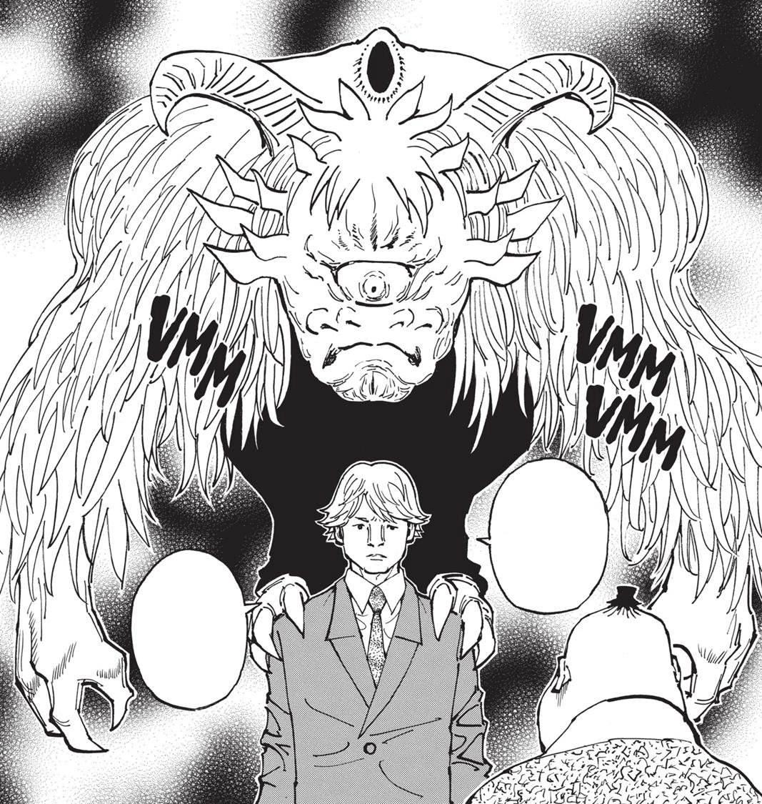
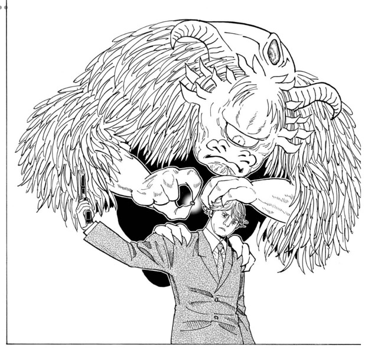

第9王子 ハルケンブルグ
- 登録名
- ハルケンブルグ＝ホイコーロ
- 分類
- 王子
- 初期配置（現在地ではありません）
- 第1層 1009号室
初期配置は台帳の当初の担当先です。後任の人物や復元枠も含み、全員の出航時の在室を示すものではありません。後の展開は下の折りたたみにまとめています。
人物詳細（後の展開を含む）
- 状態
- 本来の肉体が死亡（人格の所在は未確認）（第404話時点）
- 所属
- カキン王国
- 母（王妃）
- 第二王妃ドゥアズル
- 最後の所在
最後に登場した場面：第386話（場所は推定：ハルケンブルグ側の部屋（1009号室として整理））
場所を画像で確認できた記録はまだありません
ほかの関係記録（本人の在室は未確認）
- 念使用の確認
- 念使用：確認済み（第382話時点）
- 念系統
- 未確認
- 念能力
- 少年は残酷な弓を射る（第403話の技名）：第404話の本人の独白によれば、能力は『強制的人格転換』。発動側の集団からランダムに1人が選ばれ、矢で射抜かれた人物とその1人の人格が交換される（本人の説明）。
- 守護霊獣
- 鳥型一ツ目鬼念獣
家族関係
- [親子] 第2王妃 ドゥアズル（公的な母）
- [親子] 第1王妃 ウンマ（実母説・未確定）
守護霊獣：鳥型一ツ目鬼念獣
- 外見・形態
- 鳥の特徴を持つ一ツ目鬼の形をした念獣
- 守護霊獣の念系統
- 強化系
- 念能力
- 強化系・相互協力型。羽の刻印を介して臣下のオーラを束ね、王子を守る力を生む。王子自身の弩と人格転換の能力「少年は残酷な弓を射る」は本人の能力欄に記録する。
- 第386話の検証だけでは、スミドリの人格が元の肉体へ帰還したとは確定できない。
第375話（原作確認記録あり） ／ 第382話（原作確認記録あり） ／ 第386話（原作確認記録あり） ／ 第386話（原作確認記録あり） ／ 第386話（原作確認記録あり）


状態の経緯
- 第403話：医務室の寝台に横たわる（矢を放った後。命中・人格の入れ替わりは描かれない） — 第403話で支持者と鳴動を起こし、矢（少年は残酷な弓を射る）を兵隊長（バルサミルコ）に向けて発射する（E403-003）。兵隊長は電話で『攻撃ははずれ』『第9王子はその場で意識を失いました』と報告し（E403-004）、話の最後で医務室の寝台に横たわる姿が描かれる（E403-017）。命中・人格の入れ替わり・拘束は第403話の画像では描かれない（2回目の通話で兵隊長の背後にハルケンブルグの顔が重ねて描かれるのは示唆にとどまる）（原作確認記録あり） 根拠の出来事
- 第404話：人格が兵隊長（バルサミルコ）の肉体に移っている（第404話の本人の独白で判明） — 第404話で兵隊長の肉体にいるハルケンブルグが独白で『僕の能力は強制的人格転換』『ここで僕自身が兵隊長と人格転換する事は低確率だが想定内の事象だった』と述べ、兵隊長の肉体で意志決定している（E404-002）。入れ替わりの瞬間は描かれない（第403話の矢の発射の時と読めるが、画像では明示されない）。本来の肉体は嘔吐して総合病院へ搬送される（E404-002・E404-006）（原作確認記録あり） 根拠の出来事
- 第404話：本来の肉体が死亡（人格の所在は未確認） — 医療モニターに心拍停止が描かれ、死亡が船内放送で公表される（E404-005）。死因と人格への影響は未確認。第417話でも、第9王子が人格転換で誰と入れ替わったかは捜索中とされる（E417-007）（原作確認記録あり） 根拠の出来事
編集状況
- 人物ID：P09
- 状態の確認話数：第404話／根拠の出来事：E404-005（原作確認記録あり）
- 能力欄の編集注記：羽の刻印、集団オーラ、鎧と矢、守護霊獣の作用との関係は未整理。
- 公開データの登録情報から生成したページです。個人メモ・編集内容・調査記録は含めません。
- 一覧の詳細でメモ・編集
情報源：公開人物台帳・公開出来事台帳。